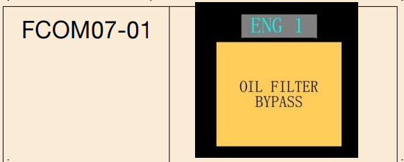
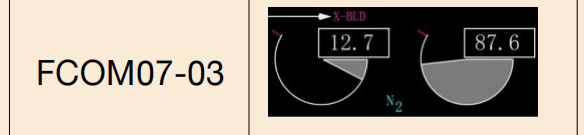
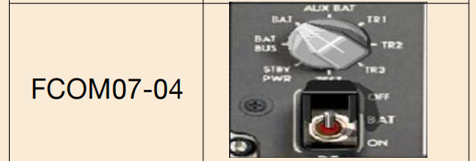

2023华东题库(2069题)
801~1000
FCOM07062
如果需要选用交输引气起动，在____刻度盘上方出现X-BLD指示。
A、N1
B、N2
C、EGT
D、FF
B
FCOM07063
滑油流经发动机的主滑油冷却器，滑油被_____冷却，以保持合适的滑油温度；
A、发动机引气
B、发动机燃油
C、冲压空气
D、液压油
B
FCOM07064
发动机燃油关断活门在以下何种情况下将关闭？
A、仅当切断发动机起动手柄时
B、仅当拔出发动机灭火手柄时
C、切断发动机起动手柄或者拔出发动机灭火手柄时
D、关闭所有的燃油泵时
C
FCOM07065
滑油压力低（LOW OIL PRESS）琥珀色带，当N2低于____时不显示。
A、25
B、50
C、56
D、65
D
FCOM07066
正常起动机工作周期，起动机每次起动尝试不应超过___分钟？
A、1
B、2
C、3
D、5
B
FCOM07067
关车前，在慢车推力或者接近慢车推力运转发动机最少____分钟以稳定发动机温度？
A、1
B、2
C、3
D、5
C
FCOM07068
使用地面气源起动时，先起动____号发动机。
A、1
B、2
C、在桥位时先起动2发
D、根据地面机务的指令
A
FCOM07069
EEC在空中是否具有非正常起动保护？
A、是
B、否
C、10000英尺以上提供
D、根据选型不定
B
FCOM07070
在同一空速和高度时，进近慢车的N1和飞行慢车的N1相比
A、相同
B、小
C、大
D、随机设置
C
FCOM07071
通常情况下，发动机起动过程中，会不会发生在燃油流量（FF）读数出现前排气温度读数（EGT）上升的情况？
A、会
B、不会
C、两个读数总是同时出现的
D、完全断电后的第一次起动时，FF先出现；其他起动期间，EGT先出现
A
FCOM07072

如图FCOM07-01，旁通滑油滤（OIL FILTER BYPASS）警告在以下何种条件下闪烁被抑制？
A、起飞过程中高于400英尺无线电高度
B、着陆过程中低于200英尺无线电高度，直到接地后30秒
C、起飞过程中80节到1000英尺无线电高度
D、起飞离地瞬间至400英尺无线电高度
B
FCOM07073

如图FCOM07-02，油门未收回到慢车位，1号发动机EEC系统现处于什么模式？
A、正常
B、软备用
C、硬备用
D、如果2发推力手柄也未收回到慢车位，处于硬备用模式，否则为软备用
C
FCOM07074
发动机控制（ENGINE CONTROL）指示灯亮，飞机是否可以放行？
A、可以
B、不可以
C、如果双发起动已经完成，可以放行，否则不能放行
D、发动机控制灯在地面被抑制，不会亮
B
FCOM07075
对于2号发动机，右点火（IGL R）由______供电?
A、1号交流转换汇流条
B、备用交流汇流条
C、1号直流汇流条
D、2号直流汇流条
B
FCOM07076
对于1号发动机，左点火（IGL L）由______供电?
A、1号交流转换汇流条
B、备用交流汇流条
C、1号直流汇流条
D、2号直流汇流条
A
FCOM07077
发动机失效时，失效（ENG FAIL）显示在：
A、N1指示上
B、N2指示上
C、VIB指示上
D、EGT指示上
D
FCOM07078
EEC正常模式时提供哪些参数的超限保护:
A、N1保护
B、N1和N2保护
C、N2保护
D、N1 、N2和EGT保护
B
FCOM07079
EEC备用模式时提供哪些参数的超限保护:
A、N1保护
B、N1和N2保护
C、N2保护
D、N1 、N2和EGT保护
B
FCOM07080
判断起动机最大冷转为（）秒内N2上升小于1%
A、5
B、6
C、7
D、8
A
FCOM07081
737NG机型APU工作的负荷能力如何?
A、在地面或空中一定高度以下，都可以向一个空调组件提供引气：在地面还可向两个发电机汇流条供电，在空中只能向一个汇流条供电
B、在地面或空中都可以向一个空调组件提供引气及向二个发电机汇流条供电
C、在地面可向两个空调组件提供引气，在空中只能向一个空调组件提供引气；在地面可向两个发电机汇流条供电，在空中只能向一个汇流条供电
D、在地面可向两个空调组件提供引气：在空中只能向一个空调组件提供引气：在地面或空中都能向二个汇流条供电
D
FCOM07082
在不更改数据显示的情况下，如何查看自上次复位后，到目前为止，发动机已经消耗的油量：
A、使用燃油流量电门，将该电门扳至 “USED”位
B、使用燃油流量电门，将该电门扳至 “RESET”位
C、通过CDU的性能页面查看
D、无法查看
A
FCOM07083
下列关于APU的工作与电瓶电门的使用描述正确的是：
A、电瓶电门位置与APU工作无关
B、APU起动之前需要将电瓶电门放在接通位
C、APU起动正常工作后，无需电瓶汇流条提供电源，所以此时与电瓶电门位置无关
D、APU起动正常工作后，如将电瓶电门至于OFF位，APU将在1分钟后自动关车
B
FCOM07084
关于APU OVER SPEED指示灯亮的说法不正确的是
A、超过 APU RPM 限制，导致APU自动关车
B、在正常的APU关车过程中，超速关车保护功能未通过系统自测
C、APU电门在关位时，该灯解除预位
D、如果在APU电门放在OFF时灯亮，在故障消除之前一直保持亮
D
FCOM07085
发动机反推套筒的运动什么时候受到抑制?
A、反推手柄在压下位时
B、反推套筒在收起位且反推手柄在压下位
C、空/地安全传感器在地面位，打开反推装置时
D、飞机滑跑速度大于90海里时
B
FCOM07086
发动机滑油压力指示显示的是什么位置的滑油压力?
A、发动机滑油回油管里的压力
B、发动机滑油箱里的压力
C、发动机滑油滤上游的压力
D、在进入发动机润滑之前的滑油泵出口管路中的压力
D
FCOM07087
发动机起动期间，如果排气温度表的读数闪亮，则表明的是一种什么状况?
A、仅表明发动机出现了超温现象
B、发动机温度指示不正常
C、温度表的指示信号不可靠
D、地面起动时，发动机电子控制探测到可能导致热起动或失速的情况
D
FCOM07088
反推自动回收电路工作后，反推隔离活门何时恢复正常状态?
A、当指令反推装置打开或采取了正确的维护措施时
B、当反推手柄在压下位并采取了正确的维护措施时
C、当按压反推装置复位电门时
D、飞机着陆后且空速减小到低于60海里时
A
FCOM07089
后顶板上的"REVERSER"灯亮，下列哪一项不正确
A、反推隔离活门或反推控制活门不在指令位
B、一个或多个反推套筒不在指令状态
C、自动收回线路被起动
D、反推装置已经放出
D
FCOM07090
下列哪项不是发动机热起动的现象？
A、EEC自动关闭点火，关断供发动机的燃油
B、当EGT下降到起动限制的时候，指示回复到白色。
C、发动机关车后，一个红的框罩住EGT 的数字指示
D、提起发动机起动手柄到慢车位15秒未出现EGT上升
D
FCOM07091
着陆后，压下反推手柄时，后顶板上的“REVERSER”灯亮超过多长时间会导致主警告灯和系统信号牌亮?
A、8秒
B、10秒
C、12秒
D、14秒
C
FCOM07092
着陆后，压下反推手柄时，后顶板上的“REVERSER”灯亮多长时间灭是正常的?
A、10秒
B、12秒
C、14秒
D、16秒
A
FCOM07093
CFM56型发动机的N1转子由什么构成？
A、一级风扇，四级低压压气机和四级低压涡轮
B、一个风扇，一个低压压缩机，一个低压涡轮
C、三级风扇、三级低压压气机和九级低压涡轮
D、三级低压压气机和四级低压涡轮
B
FCOM07094
点火器选择电门在“L"位，当两个起动电门扳到"FLT"位时，哪个点火器提供点火?
A、两台发动机的左点火器同时点火
B、仅左发动机的两个点火器同时点火 -
C、两台发动机的左右点火器同时点火
D、仅左发动机的左点火器点火
C
FCOM07095
“APU LOW OIL PRESSURE”灯何时亮是正常的?
A、APU电门放在“ON”位而APU还没有工作时
B、APU关车后
C、APU起动期间滑油压力上升到正常之前
D、任何时候亮都是不正常的
C
FCOM07096
APU工作期间，APU使用的燃油是否会自动加温以防止结冰。
A、可以
B、不可以，需要把发动机防冰打开
C、可以，但要求接通中央邮箱的油泵
D、可以，但要求接通1号主邮箱的油泵
A
FCOM07097
压气机发生喘振时，将引起EGT如何变化？
A、急剧下降
B、急剧上升
C、恒定不变
D、忽高忽低
B
FCOM07098
液压A系统失效时，1发反推装置打开和收回的速率会比2发的慢，从而导致发动机推力出现暂时的不对称
A、对，因为1号发动机反推使用备用系统压力
B、错，1号发动机反推可以由液压B系统提供压力
C、错，1号发动机反推可以由备用液压系统提供压力
D、错，1号发动机反推可以由储压器提供压力
A
FCOM07099
在APU使用期间，“MAINT”灯亮了：
A、必须关掉APU
B、可以继续正常使用APU
C、可以再使用20分钟
D、出现了必须维护的故障
B
FCOM07100
在地面/空中起动发动机时，起动手柄提到慢车位后，必须在多少秒钟内观察到到EGT上升?
A、5秒
B、10秒
C、地面15秒，空中30秒
D、地面和空中都是30秒
C
FCOM07101
在发动机起动期间，出现N1读数后，什么时候可以将起动手柄提到慢车位?
A、N2达到25％时
B、N2达到20％以上时
C、最大起动机工作转速时
D、N2达到25％或最大冷转时
D
FCOM07102
在空中或地面，APU正常工作并向机上电气系统供电时，如果将电瓶电门关掉，对APU有何影响?
A、没有影响
B、APU将自动关车
C、APU延时60秒后自动关车
D、APU延时120秒后自动关车
B
FCOM07103
正常发动机起动过程中
A、将发动机起动电门置于GND之前仅滑油量和发动机振动可用
B、将发动机起动电门置于GND之前仅 N1,N2，滑油量和发动机振动可用
C、发动机加速到15%N2之前，EEC无电。
D、将发动机起动电门置于GND之前发动机指示仅可见圆形刻度
B
FCOM07104
中央仪表板上显示的推力方式显示是？
A、现用发动机起飞推力限制的基准方式
B、目前状态下最佳的推力基准方式
C、起飞或复飞N1的限制方式
D、现用的N1限制基准方式
D
FCOM07105
发动机起动前琥珀色双引气指示灯亮你应该做什么？
A、不用做什么，这是正常情况
B、不得起动发动机
C、关断APU
D、使用地面气源车起动发动机
A
FCOM07106
发动机起动机需要什么才能工作?
A、电源
B、增压空气
C、电源和增压空气
D、电源、增压空气和液压压力
C
FCOM07107
下列哪项不是将发动机起动手柄提起到“IDLE”位的作用？
A、通过发动机电子控制接通点火系统
B、电动打开位于机翼前缘吊架外侧的翼梁燃油关断活门
C、通过发动机电子控制，电动打开发动机燃油关断活门
D、打开起动活门使压力转动起动机
D
FCOM07108
发动机起动的哪些保护特性在空中起动时起作用。
A、热起动
B、湿起动
C、EGT超限
D、均不起作用
D
FCOM07109
哪些情况不会造成APU自动关车?
A、APU“ LOW OIL PRESSURE”灯亮
B、APU“ OVERSPEED”灯亮
C、APU“ FAULT”灯亮
D、APU“ MAINT”灯亮
D
FCOM07110
发动机起动手柄控制：
A、起动机和燃油
B、燃油和点火
C、起动机
D、点火与起动机
B
FCOM07111
关于发动机燃油关断活门，下列说法正确的是
A、无论何时他们相关的发动机火警手柄拉出或者发动机起动手柄在关断位，和翼梁燃油关断活门一起关闭
B、由发动机火警手柄和发动机起动手柄共同控制开关
C、是唯一的燃油关断活门，相应的蓝色指示灯在前顶板的燃油面板上
D、和翼梁燃油关断活门都需要交流电操作
A
FCOM07112
反推自动回收电路工作时，通过控制什么来防止反推套筒打开?
A、通过打开反推隔离活门来引导液压去收上反推套筒，并在这之后的使用中抑制反推开锁
B、通过打开反推隔离活门并指令控制活门至回收位置来引导液压去收上反推套筒
C、通过反推套筒超控管路用液压强制收上
D、通过锁定回油管路来防止反推套筒继续打开
B
FCOM07113
飞行中，如故障使EEC接收不到襟翼或防冰信号，则进近慢车程序开始于：
A、20000英尺MSL以下
B、15000英尺MSL以下
C、10000英尺MSL以下
D、5000英尺MSL以下
B
FCOM07114
如探测到湿起动，何时EEC将切断发动机的燃油：
A、地面起动过程中起动活门打开后15秒
B、地面起动过程中起动手柄移至慢车后15 秒
C、起动手柄移至慢车后在地面10秒或在空中30秒
D、湿起动时不提供自动关车
B
FCOM07115
如果任一DEU（显示电子组件）失效，将会导致
A、对EEC无影响
B、导致受影响的EEC丧失信号
C、导致两部EEC的信号丧失
D、EEC自动进入硬备份方式
C
FCOM07116
如果一个DEU（显示电子组件）失效将导致起动EEC的备用方式,下列说法哪一个是正确的？
A、EEC自动转换进入硬方式且发动机可能超压
B、先进入软备用方式，使用最后的有效飞行状态定义发动机参数
C、如推力手柄减小，进入硬方式，ON指示消失
D、必须通过发动机控制面板上人工选择才能输入硬方式
B
FCOM07117
自动再点火功能提供熄火保护。一旦发动机电子控制探测到发动机熄火，两个点火器都将工作。出现以下情况时探测到熄火：
A、N1非指令性快速减小，
B、如N1非指令性快速减小或N2低于慢车RPM时，即探测到熄火。
C、如N2非指令性快速减小或N2低于慢车RPM时，即探测到熄火。
D、如N1非指令性快速减小或N2低于慢车RPM或EGT 低于200°C
C
FCOM07118
下列哪一情况将导致APU关车：
A、APU DET INOP 琥珀色灯亮
B、电瓶电门置于关位
C、APU引气管道过热
D、APU维护灯亮
B
FCOM07119
EEC（发动机电子控制）对下列哪种起动提供EGT超红线保护？
A、空中交输引气起动
B、不提供保护
C、地面起动
D、空中风转起动
C
FCOM07120
APU何时有能力保证两个空调组件引气：
A、空中和地面运行均可以
B、空中和地面，但是空中有使用高度限制
C、空中和地面过程运行，但空中根据APU负荷决定
D、仅在地面运行过程中
D
FCOM07121
起动过程如EGT超过起动红线限制，___自动关断点火并切断燃油：
A、EEC
B、HMU
C、燃油管理组件
D、发动机起动手柄
A
FCOM07122
737机型关于发动机使用哪项参数作为输出推力的表示：
A、N1
B、N2
C、EGT
D、Fuel Flow
A
FCOM07123
正常情况下，现用 N1 限制通常由___提供给自动油门：
A、自动油门计算机
B、飞行管理计算机
C、自动飞行指引系统
D、大气数据计算机
B
FCOM07124
正常飞行过程中，N1目标值是由___提供给自动油门：
A、EEC
B、FMC
C、AFDS（自动飞行指引系统)
D、大气数据计算机
B
FCOM07125
电瓶起动过程中，EEC什么时候有电
A、起动电门置于GND时
B、N2大于15%
C、起动手柄提至慢车
D、大于25%N1
B
FCOM07126
发动机“滑油滤旁通”灯何时开始亮?
A、滑油进油滤即将旁通时
B、滑油进油滤已经旁通时
C、滑油回油滤即将旁通时
D、滑油回油滤上游的压力超过限制值时
C
FCOM07127
737NG使用什么发动机?
A、CFM56-7
B、JT8D-17A
C、RB21l—3
D、JT9D
A
FCOM07128
在什么情况下，APU GEN OFF BUS指示灯将亮：
A、当APU在运转且未向AC转换汇流条供电
B、任何时候APU为1号发电机汇流条提供电源
C、任何时候APU为2号发电机汇流条提供电源
D、任何时候APU为主汇流条而不是相关的转换汇流条提供电源
A
FCOM07129
APU工作期间，“APU LOW OIL PRESSURE”灯亮：
A、要求机组人工关掉APU
B、可以继续使用APU，但不能使用APU引气
C、要求机组将APU电门放到“OFF”位后，再放到“START”位1-2秒松手
D、APU自动关车
D
FCOM07130
CFM56型发动机附件齿轮箱由哪个转子驱动?
A、N1转子
B、N2转子
C、N1和N2转子
D、低速时为N2转子，高速时为NI转子
B
FCOM07131
什么情况会导致发动机的“滑油低压”灯亮?
A、发动机滑油压力到达或低于红线
B、发动机滑油压力到达或低于黄区
C、发动机滑油压力到达或低于黄区超过5 分钟
D、对应于发动机当时的推力状态，滑油压力不能满足需要
A
FCOM07132
起动APU电源来自：
A、电瓶汇流条或地面直流电源
B、电瓶电源或任一交流转换汇流条
C、任一交流或直流备用汇流条
D、有交流电源时来自于1号交流转换汇流条；如无交流电源时，来自于电瓶
D
FCOM07133
发动机引气活门由？
A、交流电控制并通过压力作动
B、直流电控制并通过压力作动
C、压力控制并通过交流电作动
D、压力控制并通过直流电作动
B
FCOM07134
反推是靠____ 来工作。
A、液压
B、直流电
C、交流电
D、气源
A
FCOM07135
引气是由 ____ 级和____级压气机产生的。
A、6,7
B、5,9
C、4,6
D、3,7
B
FCOM07136
点火系统是靠 _____ 的动作来工作的。
A、起动电门
B、起动机
C、起动电门和起动手柄
D、空中/地面点火电门
C
FCOM07137
发动机交输引气启动时，用于发动机起动所需的最低管道压力是 ____ psi。
A、48
B、40
C、30
D、25
C
FCOM07138
在正常起动发动机时，点火选择器电门应放在“左”或“右”，发动机起动电门应该放在 ____ 位置。
A、地面
B、连续
C、空中
D、接通
A
FCOM07139
在起飞时，起动电门应放在_____ 位置。
A、关断
B、连续
C、空中
D、地面
B
FCOM07140
燃油流量电门是靠弹性保持在 _____ 位置。
A、“RESET复位”
B、“RATE速率”
C、“USED用过”
D、上一次使用过的位置
B
FCOM07141
将燃油流量电门搬到“UESD用过”位置，显示的将是____ 之后所用过的燃油。
A、发动机起动
B、起飞
C、加油
D、复位
D
FCOM07142
后顶板上发动机仪表面板的“反推”灯亮超过12秒，表明：
A、两个反推系统处于准备状态
B、正在使用一个或两个反推
C、B压力系统失效
D、存在故障
D
FCOM07143
发动机起动机通过附件齿轮箱直接带动哪个转子?
A、N1转子
B、N2转子
C、N1转子和N2转子
D、高压转子
B
FCOM07144
在发动机起动期间，最迟在什么时候必须看到有滑油压力指示?
A、N1达到15％时
B、N1达到46％时
C、N2达到46％时
D、慢车转速时
D
FCOM07145

如图如图FCOM07-03所示，N2上方X-BLD表示：
A、需要打开燃油交输
B、需要进行交输引气起动
C、可以使用风转起动
D、不允许起动
B
FCOM07146

如图如图FCOM07-04所示，当电瓶电门关闭时，APU能否成功起动？
A、能
B、不能
C、需特殊起动程序
D、
B
FCOM07147
如果APU开关移到OFF位而没有在推荐期间操作在“零负载”模式，将会发生什么？
A、APU将会立刻断开
B、APU将会工作在零负载模式下一分钟，然后关断
C、一个故障警告发生
D、以上都不是
B
FCOM07148
在一个PMC接通而另一个PMC不工作的情况下起飞是允许的。
A、对
B、错
C、
D、
B
FCOM07149
进入发动机的合适燃油量是由 ___ 来控制的。
A、燃油流量传感仪
B、发动机主控制器
C、油门杆
D、增压/释压活门
B
FCOM07150
动力关系控制器（PMC）在所有的飞行阶段按照____的变化来调节燃油流量。
A、油门杆角度
B、N1转速
C、N2转速
D、外界大气温度
A
FCOM07151
在下列哪一种情况下，发动机会处于高慢车转速状态？
A、起落架放下
B、PMC断开
C、飞机在空中及接地后4秒以内
D、襟翼放出后
C
FCOM07152
在下列哪一种情况下，发动机会处于高慢车转速状态：
A、起落架放下
B、PMC关断
C、后缘襟翼在15或大于15
D、一个燃油箱的两个增压泵都失效
C
FCOM08001
发动机火警过热探测电门在“NORMAL”位时，哪个探测环路是现用环路？
A、A 环路
B、B 环路
C、A 和 B 环路
D、A 环路现用，A 环路故障后自动转换到 B 环路
C
FCOM08002
在地面，如果 APU 火警警告喇叭响了，以下哪种方式无法终止警告声？
A、按压任何一个主火警灯
B、按压“过热/防火”面板上的“火警铃切断”电门
C、按压在主轮舱里的 APU 地面控制面板上的“喇叭切断”电门
D、按压任何一个主警戒
D
FCOM08003
灭火瓶测试电门用来测试什么？
A、测试灭火瓶的爆炸帽是否失效
B、测试灭火瓶内灭火剂的压力是否足够
C、测试灭火瓶释放线路
D、测试用于灭火瓶释放的电源电压是否足够
C
FCOM08004
拉出发动机灭火手柄对液压系统有何影响？
A、会导致相应的发动机液压泵输出压力低及相应的低压灯亮
B、会导致相应的液压系统输出压力低，但相应的低压灯不会亮
C、没有影响
D、会导致相应的发动机驱动泵关断活门闭合，但相应的低压灯不会亮
D
FCOM08005
过热/防火面板上的“发动机过热”灯亮会出现哪些警告系统提示？
A、主警戒灯、“过热/探测”系统信号灯、主火警电门和警铃响
B、主警戒灯、“过热/探测”系统信号灯和主火警电门
C、主警戒灯和“过热/探测”系统信号牌
D、主警戒灯、“过热/探测”系统信号灯、主火警灯和灭火手柄灯
C
FCOM08006
“APU DET INOP”灯亮会出现哪些警戒系统提示？
A、没有任何警告出现
B、仅主警戒灯亮
C、主警戒灯和“过热/探测”系统信号牌亮
D、主火警灯、主警戒灯和“过热/探测”系统信号牌亮
C
FCOM08007
按压“主火警”灯会：
A、熄灭两个主火警灯，复位火警警告系统，为下一次警告做好准备
B、熄灭两个主火警灯并抑制火警铃响，复位火警警告系统，为下一次警告做好准备
C、熄灭两个主火警灯，抑制火警铃和远距 APU 火警喇叭响
D、熄灭两个主火警灯，抑制火警铃和远距 APU火警喇叭响，复位火警警告系统，为下一次警告做好准备
D
FCOM08008
什么时候扳动APU地面控制面板上的“BOTTLE DISCHARGE”电门可以释放APU灭火瓶？
A、当出现 APU 火警警告时
B、当出现 APU 火警警告并按压了主火警警告灯或火警铃切断电门时
C、当 APU 地面控制面板上的火警控制手柄被拉下时
D、当APU火警喇叭响时
C
FCOM08009
有过热探测系统的装置有：
A、发动机
B、发动机和 APU
C、发动机、APU 和主轮舱
D、发动机、APU、盥洗室和主轮舱
A
FCOM08010
发动机灭火系统由什么汇流条供电？
A、备用直流汇流条
B、1 号直流汇流条
C、电瓶汇流条
D、热电瓶汇流条
D
FCOM08011
发动机过热探测电门在“正常”位时，如果有一个环路发生故障，探测系统会怎样？
A、相应的探测系统失效
B、自动转换到单环路工作状态
C、不能探测过热状态，只能探测火警状态
D、只有将相应的过热探测电门扳到“A”或“B”位，才能恢复系统的功能
B
FCOM08012
将过热探测电门放到“A”或“B”位，且所选择的环路失效：
A、“故障”灯亮且系统不工作
B、“故障”灯亮且系统自动转换到另一个未被选择的环路工作
C、“故障”灯不会亮且系统自动转换到另一个未被选择的环路工作
D、“故障”灯、主警戒灯和系统信号牌灯亮且系统不工作
A
FCOM08013
发动机火警的警告为：
A、两个主火警灯亮，火警铃响
B、两个主火警灯和相关的发动机火警电门亮，火警铃响
C、两个主火警灯、相关发动机的过热灯和火警电门亮，火警铃响
D、两个主火警灯、主警戒灯、系统信号牌灯、相关发动机的过热灯和火警电门亮，火警铃响
C
FCOM08014
发动机灭火系统包括：
A、两个发动机灭火瓶，两个发动机火警电门，两个灭火瓶释放灯及一个测试电门
B、两个发动机灭火瓶，每个发动机上的两个探测环路，两个发动机火警电门，两个灭火瓶释放灯及一个测试电门
C、两个发动机灭火瓶，每个发动机上的两个探测环路，一个“故障”灯，两个发动机火警电门，两个灭火瓶释放灯及一个测试电门
D、两个发动机灭火瓶，每个发动机上的两个探测环路，两个过热探测电门，一个“故障”灯，两个发动机火警电门，两个灭火瓶释放灯及一个外部测试电门
A
FCOM08015
发动机灭火手柄通常都是锁在压下位以防止发动机意外关车； 此电门锁什么情况下自动开锁？
A、当发动机灭火手柄灯亮时
B、当发动机过热灯亮时
C、当发动机灭火手柄灯亮时或人工开锁
D、当发动机灭火手柄灯或发动机过热灯亮时
D
FCOM08016
处置发动机火警时，在向左转动灭火手柄后，发现“L BOTLE DISCHARGE”灯亮了，说明什么？
A、左灭火瓶已经释放
B、左灭火瓶释放线路有故障
C、左灭火瓶释放爆炸帽不能引爆
D、左灭火瓶灭火剂压力不足，释放不完全
A
FCOM08017
APU火警探测环路可以发出什么警告？
A、系统只有一个探测环路，系统设计只发出过热警告
B、温度达到一定值时，发出过热警告，温度更高时，发出火警警告
C、系统只有一个探测环路，系统设计只发出火警警告
D、
C
FCOM08018
主轮舱火警警告为：
A、两个主火警警告灯亮和火警铃响
B、“轮舱”火警灯和两个主火警警告灯亮及火警铃响
C、“轮舱”火警灯、轮舱过热灯和两个主火警警告灯亮及火警铃响
D、“轮舱”火警灯、轮舱过热灯、主警告灯、系统信号灯和两个主火警警告灯亮及火警铃响
B
FCOM08019
盥洗室防火的构成：
A、盥洗室灭火瓶系统（高温启动）
B、盥洗室烟雾探测系统和盥洗室灭火瓶系统（高温启动）
C、盥洗室烟雾探测系统、盥洗室灭火瓶系统（高温启动）和盥洗室温度标牌
D、盥洗室烟雾探测系统、盥洗室烟雾警告系统、盥洗室灭火瓶系统（高温启动）和盥洗室温度标牌
B
FCOM08020
当盥洗室烟雾探测系统探测到烟雾时，会有哪些警告出现？
A、通过旅客广播系统发出声响警告且盥洗室烟雾探测面板上的红色警告指示灯亮，驾驶舱没有警告
B、驾驶舱和盥洗室烟雾探测面板上的警告喇叭响和红色警告指示灯亮
C、盥洗室烟雾探测面板上的警告喇叭响和红色警告指示灯亮，驾驶舱里的盥洗室烟雾警告灯亮（如安装）
D、盥洗室烟雾探测面板上的警告喇叭响和红色警告指示灯亮，驾驶舱里的盥洗室烟雾警告喇叭响
A
FCOM08021
当在盥洗室洗手池下面的灭火瓶系统探测到有火警时：
A、灭火瓶系统自动工作且驾驶舱没有该灭火瓶释放的指示
B、灭火瓶系统自动工作且驾驶舱有该灭火瓶释放的相关指示
C、灭火瓶系统自动工作且驾驶舱出现灭火瓶释放指示灯
D、出现警告声响和主警戒灯亮，要求按压灭火瓶释放电门
A
FCOM08022
使用过热/防火面板上的“故障/不工作和过热/火警”测试电门进行故障/不工作测试时，应出现哪些指示？
A、两个主警戒灯和“过热/探测”系统信号灯亮
B、两个主警戒灯、“过热/探测”系统信号灯和“故障”灯亮
C、两个主警戒灯、“过热/探测”系统信号灯、“APU 探测不工作”灯和“故障”灯亮
D、两个主警戒灯、“过热/探测”系统信号灯、“APU 探测不工作”灯亮
C
FCOM08023
按压并保持过热/防火面板上的“故障/不工作和过热/火警” 测试电门在“过热/火警”位可以对什么进行测试？
A、可以检测两台发动机的过热和火警探测环路
B、可以检测两台发动机和 APU 的过热及火警探测环路
C、可以检测两台发动机、APU 和主轮舱的过热及火警探测环路
D、可以检测两台发动机、APU、主轮舱和前轮舱的过热及火警探测环路
C
FCOM08024
按压并松开任一系统信号牌面板:
A、熄灭两个主警戒灯
B、熄灭系统信号牌灯
C、熄灭两个主警戒灯和系统信号牌灯
D、若存在系统失效的情况,会使两个主警戒灯和相应的系统信号牌灯亮
D
FCOM08025
发动机如何进行过热和火警探测?
A、发动机的两个探测环路都可以进行火警和过热探测；当温度上升到一定值时为过热，温度再高时为火警；通常两个探测环路同时探测到火警或过热情况才会发出相应的警告
B、发动机有两个探测环路,一个进行火警探测，另一个进行过热探测；任何一个探测到过热或火警信号，都会发出相应的警告，但如果过热和火警信号同时探测到，则发出火警警告
C、发动机有A、B两个探测环路；当A、B 环路同时探测到过热信号时，会发出过热警告，而任何一个探测环路探测到火警信号，都会发出火警警告
D、发动机的两个探测环路,一个为现用，另一个为备用；工作的环路探测到火警或过热信号都会发出相应的警告
A
FCOM08026
发动机防火由哪些系统组成?
A、发动机过热和火警探测系统
B、发动机过热和火警探测系统及发动机灭火系统
C、发动机过热和火警探测系统,火警警告系统和发动机灭火系
D、发动机过热和火警探测系统,火警警告系统火警手柄和发动机灭火系统
B
FCOM08027
有防火和灭火系统的装置有:
A、发动机和APU
B、发动机、APU和盥洗室
C、发动机、APU、盥洗室和主轮舱
D、发动机、APU、盥洗室、厨房和主轮舱
B
FCOM08028
在盥洗室洗手池下面，有一个灭火瓶，其喷嘴为浅黑色或铝色各表明什么含义?
A、浅黑色表明灭火瓶已经释放，铝色表明情况正常
B、铝色表明灭火瓶已经释放，浅黑色表明情况正常
C、浅黑色表明灭火瓶为大容量,铝色表明灭火瓶为小容量
D、不同的颜色表明不同的灭火剂
B
FCOM08029
在盥洗室洗手池下面的小门内侧，有一个温度标牌，如果标牌上的前两个白圈变黑，表明什么?
A、表明当时的最高温度已经超过了200°F
B、表明当时的最高温度接近或达到第二个标所对应的温度
C、表明当时的最高温度处于180-200°F 之间
D、表明当时的最高温度处于180-200°C之间
A
FCOM08030
飞行中APU出现火警时，按"过热/防火"面板上的"BELL CUTOUT"电门会:
A、熄灭两个主火警灯，复位火警警告系统，为下一次警告做好准备
B、熄灭两个主火警灯并抑制火警铃，复位火警警告系统，为下一次警告做好准备
C、熄灭两个主火警灯,抑制火警铃和远距APU火警喇叭
D、熄灭两个主火警灯,抑制火警铃和远距APU火警喇叭, 复位火警警告系统,为下一次警告做好准备
B
FCOM08031
拉出APU灭火手柄,会导致:
A、APU灭火瓶电路预位，并关闭APU燃油和液压关断活门、引气活门和空气进气门
B、APU灭火瓶电路预位，关闭APU燃油和液压关断活门、引气活门和空气进气门，并使APU发电机控制继电器和APU发电机断电器跳开
C、APU灭火瓶电路预位,关闭APU燃油关断活门、引气活门和空气进气门，并使APU发电机控制继电器和APU发电机断电器跳开，还允许APU灭火手柄旋转
D、APU灭火瓶电路预位，关闭APU燃油和液压关断活门、引气活门和空气进气门，并使APU发电机控制继电器和APU发电机断电器跳开，还允许APU灭火手柄旋转
C
FCOM08032
下列机上设备，没有灭火系统的是
A、APU
B、盥洗室
C、货舱
D、轮舱
D
FCOM08033
对于发动机过热和火警探测，发动机过热探测电门在正常位时，环路A故障与环路B过热同时出现时，显示：
A、过热
B、故障
C、火警
D、
A
FCOM08034
B737NG飞机上共配有几个APU灭火瓶？
A、1
B、2
C、3
D、4
A
FCOM08035
盥洗室烟雾探测系统的电源来自：
A、电瓶汇流条
B、直流备用汇流条
C、1号直流汇流条
D、2号直流汇流条
C
FCOM08036
B737飞机上共安装有几个发动机灭火瓶？
A、2
B、3
C、4
D、1
A
FCOM08037
主轮舱是否有火警探测系统以及灭火系统？
A、有火警探测系统，有灭火系统
B、有火警探测系统，没有灭火系统
C、没有火警探测系统，没有灭火系统
D、
B
FCOM08038
货舱灭火系统有两个灭火瓶，这两个灭火瓶如何分配：
A、一个供前货舱，一个供后货舱
B、前后货舱共用两个灭火瓶
C、前货舱可以用两个，而后货舱只能用一个
D、
B
FCOM08039
正常情况下，当过热探测选择器在正常位，过热/防火面板上的琥珀色FAULT灯亮：
A、指示一个发动机火警
B、指示发动机的两个火警探测环路都故障
C、将脱开发电机断路器
D、将会使主警戒灯亮
B
FCOM08040
正常情况下，发动机火警探测需要：
A、两个火警环路都探测到火警或者是过热条件
B、得到一个过热信号，主警戒出现
C、只有一个探测环路必须探测到火警或者是过热
D、三个环路探测到火警，但是只有一个环路探测到过热
A
FCOM08041
琥珀色的APU探测不工作灯亮意味着：
A、APU没有安装
B、当起动APU的时候需要的注意
C、没有火警保护，不要运转APU
D、APU起动失败
C
FCOM08042
拉出发动机灭火手柄：
A、使得相关的发动机驱动液压泵低压灯亮
B、同时关断液压关断活门、燃油和发动机引气活门
C、打开机翼防冰活门
D、相关发动机的液压关断活门打开使得反推有效
B
FCOM08043
电瓶关断并且没有交流电供给汇流条，要释放灭火瓶给一号发动机必须:
A、直接拔出右侧灭火手柄并转动火警电门
B、按压左侧火警电门超控，然后拔出并转动火警电门
C、没有电源无法释放
D、
B
FCOM08044
当探测到主轮舱火警时，轮舱火警灯保持亮，除非
A、火警情况消失
B、主轮收上锁定
C、温度降到限制值以下
D、
C
FCOM08045
货舱火警探测器使用_____供电
A、直流备用汇流条
B、电瓶汇流条
C、1号和2号转换汇流条
D、1号和2号直流汇流条
D
FCOM08046
下列关于货舱火警测试，说法错误的是
A、如果环路上一个或多个探测器故障时，探测器故障灯亮
B、单个探测器故障时，不用测试主告警灯都亮，并且探测器故障灯亮
C、测试后大约有4秒钟延迟来使得相关的指示同时消失
D、当所选环路的所有探测器对火警测试反应时，前后货舱火警灯亮
B
FCOM09001
主飞行操纵系统包括_________。
A、副翼、升降舵和方向舵
B、副翼、升降舵、方向舵和襟翼
C、副翼、升降舵、方向舵和刹车
D、
A
FCOM09002
________任一液压系统都可完成所有基本的飞行操纵。
A、系统A或者B
B、系统A，B或者备用
C、系统A或备用
D、
A
FCOM09003
增升装置包括后缘襟翼、前缘襟翼和缝翼，正常都由____系统提供液压。
A、液压A
B、液压B
C、液压A或者液压B
D、
B
FCOM09004
B737NG飞机共有____块扰流板，其中____块飞行扰流板。
A、10，8
B、12，8
C、12，10
D、
B
FCOM09005
在哪些襟翼位置时，前缘襟翼应该部分放出？
A、1
B、1~5
C、前缘襟翼只能要么全收起，要么全放出
D、15-40
C
FCOM09006
翼尖小翼的作用是_____。
A、可以加强横侧的稳定性，以便于侧风降落
B、可以加快飞行速度，增强高马赫数时的稳定性
C、提供了增强型性能，延程飞行和降低了油耗
D、
C
FCOM09007
自动驾驶接通时对副翼进行配平，会出现失去配平情况，会在自动驾驶断开时________。
A、恢复中立位置
B、突然导致横滚
C、没有任何改变
D、
B
FCOM09008
下列关于扰流板的说法，正确的是
A、每个机翼表面上各有四个扰流板
B、在空中所有扰流板都可以被当作减速板
C、飞行扰流板还可以根据驾驶盘指令辅助横滚操纵
D、当驾驶盘偏转大约12度以上时，扰流板开始偏移
C
FCOM09009
如果液压系统A 和B 失效，可以前后移动驾驶杆，_____调整升降舵位置。
A、通过备用液压系统
B、通过机械装置
C、但是不能调整升降舵位置
D、
B
FCOM09010
马赫数配平系统在大约多少马赫数以上开始提供配平操作？
A、0.615
B、0.68
C、0.5
D、
A
FCOM09011
飞行中，感觉压差灯何时亮？
A、客舱和外界压差相差超过限制值时
B、升降舵上表面和下表面的气压值超过一定的限制值
C、升降舵感觉计算机感应到过量的感觉压差
D、
C
FCOM09012
速度配平系统经常在起飞，爬升和复飞时使用，下列哪项不属于它的操作条件是____
A、自动驾驶未接通，空速在100节表速到0.68马赫之间
B、起飞后10秒以后，松开配平电门随后的5 秒钟
C、感应到配平的要求
D、襟翼收上
D
FCOM09013
主偏航阻尼器由_____供压操纵，备用偏航阻尼器由____供压操纵。
A、液压B系统，备用液压系统
B、液压A系统，备用液压系统
C、液压A或者B系统，备用液压系统
D、液压B系统，液压A系统
A
FCOM09014
压下_______起落架支柱放出飞行扰流板，压下_____起落架支柱会放出地面扰流板。
A、主，主
B、任一，主
C、任一，右主
D、
C
FCOM09015
发生中断起飞时，下列情况中，哪项不会导致自动减速板系统工作。
A、主轮接地转动(60 海里以上)
B、两推力手柄收回到慢车位
C、反推手柄位于反推位
D、自动刹车工作
D
FCOM09016
前缘装置包括____个前缘襟翼和___个缝翼。
A、4，8
B、2，6
C、4，6
D、6，8
A
FCOM09017
下列关于前缘装置和后缘襟翼备用操纵系统,说法正确的是：
A、液压B 系统失效时，可提供放出和收上前缘装置和后缘襟翼备用液压
B、备用襟翼位置电门控制一个可放出和收上前缘襟翼的电动马达
C、备用襟翼位置电门必须保持在DOWN 位直到到达所需后缘襟翼位置
D、备用（电动）襟翼驱动系统可以提供不对称/ 偏斜保护
C
FCOM09018
安定面配平绿区是什么配平范围？
A、主电动配平范围
B、自动驾驶配平范围
C、空中使用安定面配平的正常范围
D、起飞安定面配平范围
D
FCOM09019
你失去了液压系统B（液压系统A正常工作）。将B FLT CONTROL电门放置OFF或STBY RUD位将：
A、只有液压系统A提供正常压力并且YAW DAMPER电门在ON位，备用偏航阻尼器功能就一直有效。
B、只有液压系统A提供正常压力并且YAW DAMPER电门在ON位，主用偏航阻尼器功能就一直有效。
C、如果YAW DAMPER电门被重置到ON 位，备用偏航阻尼器功能就一直有效。
D、YAW DAMPER电门断开，琥珀色的YAW DAMPER灯亮并且YAW DAMPER电门不能被重置。
D
FCOM09020
襟翼卸载系统的操作：
A、只有襟翼40位
B、所有的襟翼位置
C、襟翼30和40位（10、15、25、30、40根据选型）
D、
C
FCOM09021
后头顶面板上前缘装置指示所有前缘装置的FULL EXT灯亮绿色时，后缘襟翼位置：
A、后缘襟翼在5（或25根据选型）以上
B、后缘襟翼在5
C、后缘襟翼在1
D、
A
FCOM09022
当减速板在_＿位时，横滚速率增加最为明显。
A、FLIGHT DETENT
B、中间位置
C、UP
D、ARMED
B
FCOM09023
ALTERNATE FLAPS主控电门：
A、预位ALTERNATE FLAPS位置电门，触发备用液压泵和关闭后缘襟翼旁通活门
B、电动地完全伸出前缘襟翼装置并使用备用液压压力放出后缘襟翼
C、关闭飞行扰流板关断活门
D、触发备用液压泵并对备用方向舵动力控制组件进行增压
A
FCOM09024
除了液压系统A和B，方向舵也可以使用备用液压系统通过：
A、主方向舵动力控制组件
B、系统A动力控制组件
C、系统B动力控制组件
D、备用方向舵动力控制组件
D
FCOM09025
当备用偏航阻尼器工作时，方向舵的移动：
A、不指示在偏航阻尼器的指示器上
B、指示在偏航阻尼器的指示器上
C、不指示在备用偏航阻尼器的指示器上
D、指示在备用偏航阻尼器的指示器上
A
FCOM09026
升降舵感觉系统由升降舵感觉计算机提供，此计算机的输入信号来自：
A、飞机空速和水平安定面的位置
B、只来自液压系统A的压力
C、升降舵平衡定位装置的位置
D、飞机高度和升降舵位置
A
FCOM09027
以下哪种说法是正确的：
A、飞行扰流板只用作增加阻力和减少升力
B、后缘襟翼可以使用备用襟翼驱动系统放出但是不能通过此系统收回
C、在一定的条件下，动力转换组件自动为后缘装置提供动力
D、主飞行控制由液压系统A和B驱动，备用液压系统为方向舵提供备份以及副翼和升降舵可以进行人工机械操作。
D
FCOM09028
瞬间地将ALTERNATE FLAPS（备用襟翼）位置电门放置DOWN位将：
A、使用备用液压压力完全放出前缘装置，如果电门保持在DOWN位将电动地放出后缘襟翼直到电门松开。
B、使用备用液压压力完全放出前缘装置并且电动地放出后缘襟翼
C、使用备用液压压力将前缘装置放出至中立位并且电动地放出后缘襟翼
D、使用备用液压压力将前缘装置放出至中立位，如果电门保持在DOWN位将电动地放出后缘襟翼直到电门松开。
A
FCOM09029
如果你失去液压系统B的压力，YAW DAMPER．电门会移至OFF位吗?
A、不会。电门将保持在ON位直到B的FLIGHT CONTROL电门被放置OFF或STBY RUD位
B、会的，电门将立刻断开。
C、不会。偏航阻尼器将由液压系统A供压。
D、不会。电门不会断开因为它对飞行是必须的。
A
FCOM09030
在飞机操作期间，在什么操作条件下，速度配平系统指令安定面朝与速度变化相反的方向移动，使飞机回到配平的速度：
A、大重量，前重心和小推力且自动驾驶没有接通。
B、小重量．后重心和小推力且自动驾驶接通。
C、大重量，后重心和大推力且自动驾驶接通。
D、小重量，后重心和大推力且自动驾驶没有接通。
D
FCOM09031
动力转换组件为自动缝翼系统提供一个备用动力源，如果：
A、系统B的发动机驱动泵输出压力低
B、备用襟翼位置电门短时地向下保持
C、液压系统A的发动机驱动泵不可用
D、液压系统A的压力失去并被探测到
A
FCOM09032
本场训练中飞机连续起飞，在着陆后收襟翼到什么位置？
A、5
B、15
C、30
D、
B
FCOM09033
速度配平失效（SPEED TRIM FAIL）灯，描述正确的是？
A、当再现主警戒时亮，并且主警戒系统复位使灯熄灭，表示一部FCC通道失效
B、主警戒灯再现时亮，重置主警戒系统时灯灭则指示一部失速管理／偏航阻尼（SMYD）计算机失效
C、主警戒系统复位时灯保持亮，表示一部FCC通道失效
D、
A
FCOM09034
当驾驶盘转动角度超过大约_＿度，扰流板开始偏转？
A、22
B、18
C、10
D、5
C
FCOM09035
琥珀色的LE FLAPS TRANSIT（前缘襟翼过渡）灯亮：
A、表明所有的前缘装置都完全放出了
B、表明前缘缝翼完全放出了
C、空中自动缝翼工作时，该灯被抑制
D、提供后缘襟翼不对称保护
C
FCOM09036
关于副翼操纵，描述正确的是？
A、副驾驶的驾驶盘通过副翼感觉和定中组件用钢索连接到副翼动力控制组件（PCU）
B、机长的驾驶盘通过扰流板混合器用钢索连接到扰流板PCU
C、副驾驶的驾驶盘通过扰流板混合器用钢索连接到扰流板PCU
D、
C
FCOM09037
对于飞行操纵低压（LOW PRESSURE）灯说法正确的是：
A、该灯仅在空中才有可能亮
B、表示作用于副翼，升降舵和方向舵的液压系统（A或B）压力低
C、将飞行操纵（FLIGHT CONTROL）电门放到备用方向舵位后该灯继续工作
D、
B
FCOM09038
YAW DAMPER（偏航阻尼器）灯亮指示：
A、备用偏航阻尼器接通
B、液压A和B系统都不工作
C、偏航阻尼器断开
D、
C
FCOM09039
飞行扰流板如何协助飞机横滚的？
A、在升高的机翼上增加升力
B、在降低的机翼上增加升力
C、在降低的机翼上减少升力
D、
C
FCOM09040
执行襟翼故障的检查单的主要目的是什么？
A、修复襟翼故障
B、配置飞机着陆形态
C、为了完成检查单
D、
B
FCOM09041
对于安定面配平，说法错误的是：
A、飞机在人工驾驶时，使用安定面配平可以减小杆力
B、接通自动驾驶时，通过自动驾驶安定面配平电路完成安定面配平。
C、如果自动驾驶已接通，只有左侧驾驶盘的安定面配平电门可以断开自动驾驶。
D、
C
FCOM09042
副翼配平通过什么进行?
A、副翼配平片
B、空气动力补偿片
C、感觉和定中组件
D、扰流板作动筒
C
FCOM09043
在自动驾驶接通的情况下, 下列情况中，哪个不会导致自动驾驶断开？
A、使用了电动配平电门
B、按压亮灯的A/P接通电门
C、将自动驾驶配平切断电门扳到”切断“位
D、断开偏航阻尼器
D
FCOM09044
琥珀色减速板未预位灯亮说明
A、这是正常现象
B、着陆期间，指示机轮速度已经降至60节以下并且减速板手柄不在下卡位
C、后缘襟翼放出大于襟翼10且减速板手柄超过预位位置
D、
B
FCOM09045
偏航阻尼器（YAW DAMPER）电门在ON位时，下列说法正确的是？
A、飞行操纵B系统电门在ON位，主偏航阻尼器与主方向舵动力控制组件接通
B、飞行操纵A系统电门在ON位，主偏航阻尼器与主方向舵动力控制组件接通
C、飞行操纵A系统或B系统电门在备用方向舵（STBY RUB）位，备用偏航阻尼器与备用方向舵动力控制组件接通
D、
A
FCOM09046
备用液压低压力（STANDBY HYDRAULIC LOW PRESSURE）灯，描述正确的是？
A、总是在预位状态
B、仅当已选择备用泵工作或自动备用功能起作用时才预位
C、表示备用液压油箱内油量低
D、
B
FCOM09047
襟翼手柄的作用是？
A、直接控制后缘襟翼位置，并间接控制前缘装置位置.
B、只控制后缘襟翼位置
C、通过5和15会经过襟翼卡槽
D、
A
FCOM09048
什么情况会导致前缘襟翼过渡灯亮.
A、任何一块前缘缝翼出现偏斜情况
B、两个或两个以上前缘襟翼或缝翼从其指令位置移开
C、备用放襟翼时，直到前缘装置完全放出，并且后缘襟翼达到5以前
D、
B
FCOM09049
安定面有四种配平方式,按照优先级由低到高排序如下:①人工配平 ②主电配平③自动驾驶配平 ④速度配平
A、①②③④
B、④③②①
C、④①②③
D、①④②③
B
FCOM09050
当液压系统A和系统B都失效时：
A、如需要，副翼和升降舵可由备用液压操纵
B、如需要，副翼和升降舵可人工机械的操纵
C、仅方向舵可由人工机械的操纵
D、
B
FCOM09051
起飞时，什么时候气动效应开始对方向舵产生影响？
A、一直都有
B、40至60海里/小时
C、60至80海里/小时
D、抬轮前
B
FCOM09052
对于副翼转换机械装置说法正确的是：
A、如果副翼操纵系统卡阻，施加于副驾驶的驾驶盘的力提供扰流板横滚操纵
B、如果扰流板系统卡阻，施加于副驾驶驾驶盘的力提供副翼横滚操纵
C、如果副翼操纵系统卡阻，施加于机长的驾驶盘的力提供扰流板横滚操纵
D、
A
FCOM09053
驾驶杆卡阻时，说法错误的是：
A、超控机械装置可使操纵杆机械分离
B、机械分离后自由移动的驾驶杆可以提供足够的升降舵操纵
C、安定面配平还可以抵消驾驶杆上持续的力
D、杆力小于人工恢复过程中使用的力
D
FCOM09054
速度大于约135海里/小时情况下， A和B两个系统的液压压力在主PCU内分别减小约25%，该功能的作用是什么？
A、起飞后和着陆前的飞行阶段可限制全方向舵偏转
B、降低方向舵的灵敏度
C、降低液压系统的负荷，提高发动机推力
D、
A
FCOM09055
关于减速板手柄，说法错误的是：
A、达到1000英尺AGL高度前，必须收回减速板
B、若接地时减速板没有升起，开始刹车效应降低60%
C、正常情况下，最后进近时减速板应预位，并且在接地后自动放出
D、如果自动放出失效，不要人工使用减速板
D
FCOM09056
自动缝翼工作期间，什么情况下会导致前缘襟翼过渡灯亮.
A、前缘缝翼放出
B、前缘襟翼收回
C、不管前缘襟翼放出还是收回，前缘襟翼过渡灯都不会亮
D、
C
FCOM09057
如果接地后减速板没有升起,刹车效应一开始降低多少？
A、40%
B、50%
C、60%
D、70%
C
FCOM09058
机长的驾驶盘是由钢索通过_______ PCU 连接, 而副驾驶的驾驶盘由钢索通过_________PCU 连接.
A、副翼感觉和定中组件与副翼的/扰流板混合器与扰流板
B、扰流板混合器与扰流板 /副翼感觉和定中组件与副翼的
C、
D、
A
FCOM09059
速度配平监控相关信息后，再使用自动驾驶安定面配平来配平安定面。下列信息中哪个不是其监控的信息
A、安定面位置输入信号
B、油门杆位置
C、空速和垂直速度
D、飞行高度
D
FCOM09060
下列哪些不是自动减速板系统工作的条件？
A、减速板手柄在预位位置，减速板已预位灯亮
B、双发推力手柄在慢车（IDLE）位置
C、无线电高度小于10英尺或接地时，起落架支柱压下
D、自动驾驶接通位
D
FCOM09061
以下哪个不是减速板使用限制：
A、减速板手柄在空中不能超过飞行卡位
B、空中1000英尺AGL以下不要使用减速板
C、当襟翼大于等于15时减速板应收回
D、20000英尺以上禁止使用减速板
D
FCOM09062
下列不属于《安定面失控检查单》记忆项目的是？
A、核实偏航阻尼器接通
B、自动驾驶（如接通）... 断开,不要重新接通自动驾驶,用驾驶杆人工控制飞机俯仰姿态，并按需使用主电动配平
C、自动油门（如接通）... 断开,不要重新接通自动油门
D、如果断开自动驾驶后失控继续,安定面配平切断电门（两个）... 切断
A
FCOM09063
发生安定面失控时，下列说法不正确的是？
A、用力握住驾驶盘以保持所需的俯仰姿态
B、当断开安定面配平切断电门后失控继续，抓住并保持安定面配平轮
C、人工控制油门有助于飞机状态的控制
D、可以继续在RVSM空域内运行
D